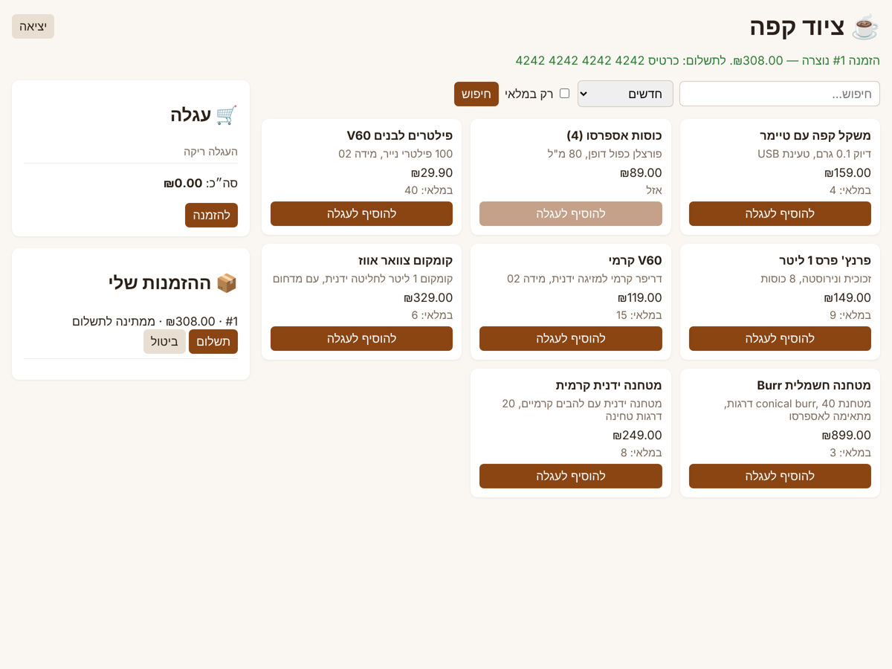

פרויקט 3 — פרויקט הדגל: חנות ציוד קפה
⏱ 3–4 שבועות
מה צריך שכבר יהיה מותקן: הכול מפרקים 20–25: Node.js 24, PostgreSQL, Docker Desktop, חשבונות GitHub, Neon ו־Render.
מה מתקינים עכשיו: כלום חדש. הפרויקט נבנה מאפס, ב־repo חדש (~/dev/coffee-shop), בלי להעתיק מפרויקט 2 — זה בדיוק מה שהוא מוכיח.
📂 העתקת חומרי הפרק: ב־Finder, העתק את התיקייה 25p-project-shop מתוך ~/Desktop/Backend/backend-course אל ~/dev/backend-course (גרירה עם ⌥ Option). אם התיקייה כבר שם מהעתקה קודמת ואתה רוצה לשמור את מה שכתבת — בחר Keep Both / Stop ולא Replace.
✔ הבודק: "קופסה שחורה" — הוא לא מסתכל על הקוד שלך, רק מריץ אותו. לכל בדיקה: מסד חדש, prisma migrate deploy שלך, node dist/main.js שלך, ובקשות HTTP. לכן לפני כל בדיקה:
% cd ~/dev/coffee-shop && npx prisma generate && npm run build % cd ~/dev/backend-course % npm run check PR3-AUTH -- --dir ~/dev/coffee-shop
- לבנות מערכת שלמה מאפס, לבד: תכנון, מודל נתונים, API, בדיקות, Docker, CI ופריסה.
- נכונות תחת מקביליות: אין מלאי שלילי גם כששני לקוחות קונים את היחידה האחרונה באותו רגע.
- Idempotency, תשלום מדומה עם כישלון, ומכונת מצבים להזמנה.
- README שמראיין קורא: החלטות טכניות, תרשימים, קישור חי.
🤔 מה בונים
חנות אונליין קטנה לציוד קפה. לקוחות מחפשים מוצרים, ממלאים עגלה, מזמינים ומשלמים (תשלום מדומה). מנהל מנהל קטלוג ומלאי, ושולח הזמנות. זה הפרויקט שתציג בראיונות — ולכן הוא נמדד בדיוק במה שמראיינים שואלים: מה קורה כששני אנשים קונים את הפריט האחרון? מה קורה כשהלקוח לוחץ פעמיים על "הזמן"? מה קורה כשהתשלום נכשל?

(צילום מסך אמיתי של הפתרון לדוגמה, רץ ב־docker compose up.)
השיעורים
תכנון: דרישות, חוזה ומודל נתונים שיעור 2 · ~240 דק׳
שלב 1: משתמשים ומוצרים שיעור 3 · ~300 דק׳
שלב 2: עגלה, הזמנה ומרוץ על המלאי שיעור 4 · ~240 דק׳
שלב 3: Idempotency, תשלום, ביטול ומשלוח שיעור 5 · ~300 דק׳
שלב 4: בדיקות, Docker, CI, פריסה ו־README שיעור 6 · ~45 דק׳
פתרון לדוגמה והחלטות עיצוב
📘 מילון המושגים של הפרק
| מונח | הגייה | פירוש |
|---|---|---|
Snapshot (price) | סְנַפְּשׁוֹט | שמירת המחיר והשם בשורת ההזמנה — היסטוריה לא משתנה |
Conditional update | קוֹנְדִישְׁנַל אַפְּדֵייט | UPDATE ... WHERE stock >= n — בדיקה ושינוי בפעולה אטומית אחת |
Lost update | לוֹסְט אַפְּדֵייט | שתי פעולות קוראות אותו ערך, וכל אחת כותבת על השנייה |
State machine | סְטֵייט מָשִׁין | רשימת המצבים והמעברים המותרים ביניהם |
Soft delete | סוֹפְט דִילִיט | סימון "לא פעיל" במקום מחיקה — כדי שהיסטוריה לא תישבר |
Black-box test | בְּלֶק בּוֹקְס | בדיקה שמכירה רק את החוזה (HTTP), לא את הקוד |
המילון המלא: glossary.html